|

|
|
Creating a report with BIRT |
|
|
|
|
Creating a report with BIRT |
| 1. | From the top level menu select: Window -> Open Perspective -> Other.... |
| 2. | Select Report Design and click on OK. |
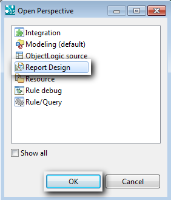
A new view appears:
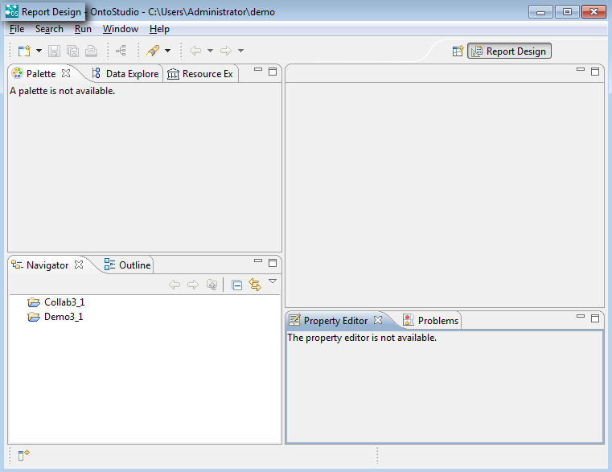
| 3. | Select your ontology project from the Navigator. |
| 4. | Make a right mouse click on the project and choose New -> Report. |
A new dialog box appears:
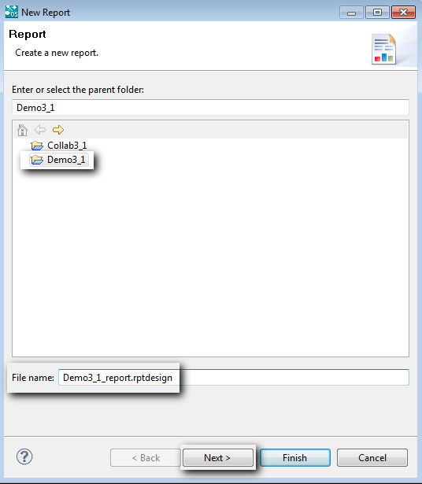
| 5. | Select a project, give a name to the report and click on Next. |
| 6. | Choose a type of report and click on Finish. |

The report is generated:
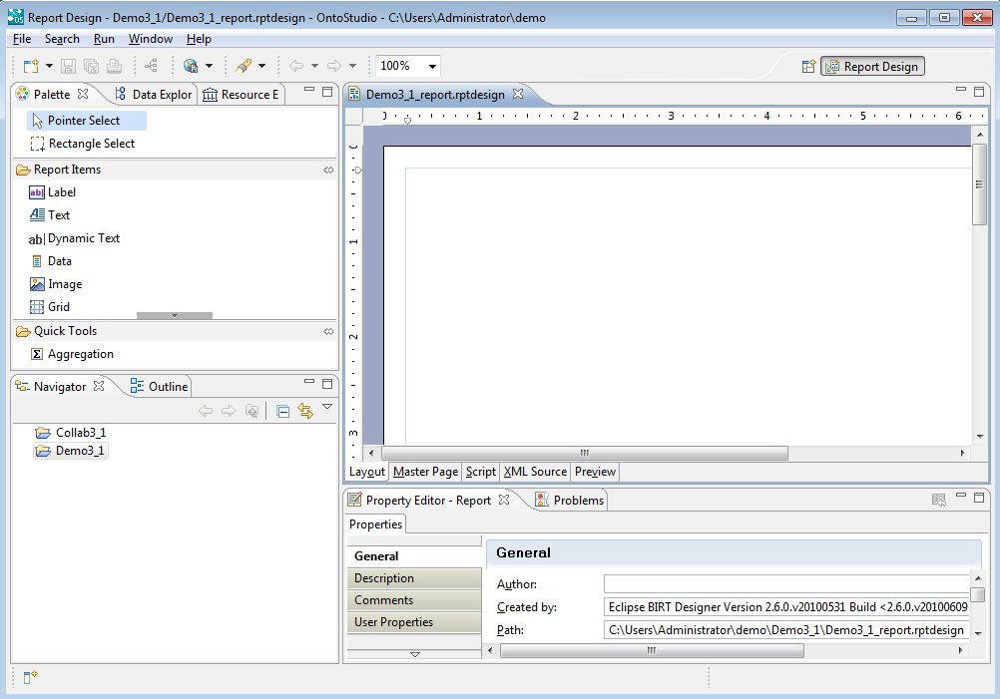
| 7. | Create a new ObjectLogic Data Source. |
| a. | Choose the tab Data Explorer. Then make a right mouse click on Data Source and select New Data Source. |
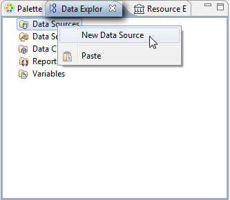
| b. | Select OntoBroker Data Source and give a name to the data source and click on Next. |
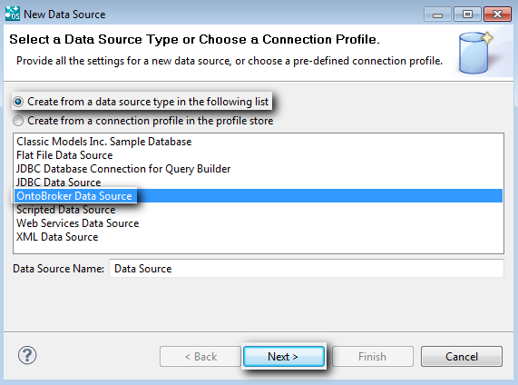
| c) | Fill out the fields and click on Finish. |
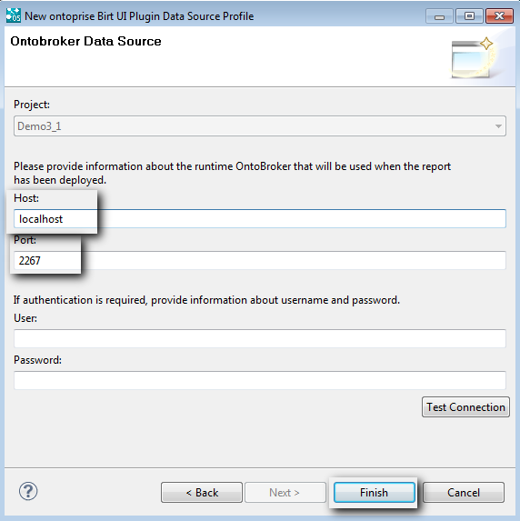
| 8. | Create a new data set. |
| a. | Make a right mouse click on Data Sets and select New Data Set. |
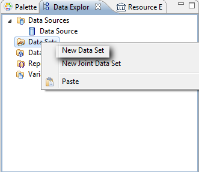
| b. | Fill out the fields and click on Next. |
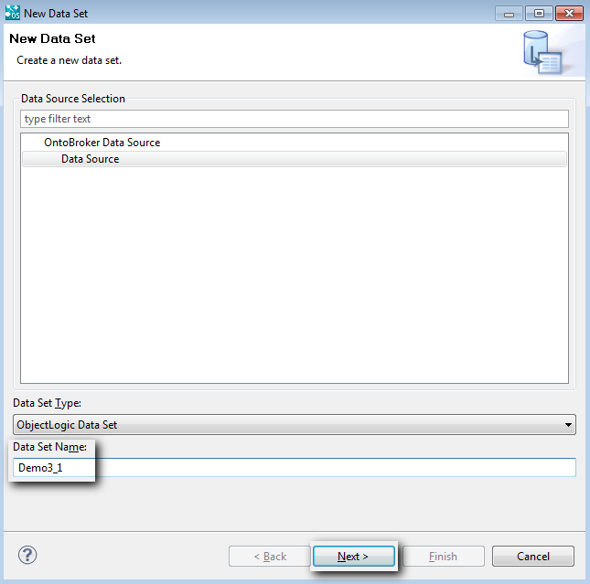
| c. | Choose the query for which the report will be created and click on Finish. |
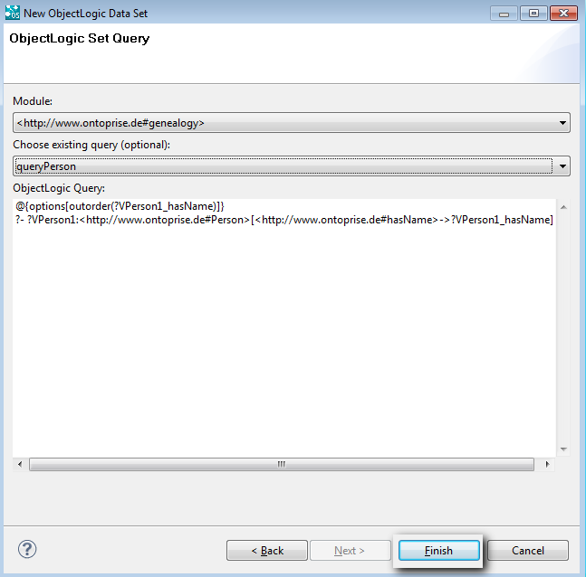
| d. | Click on OK. |
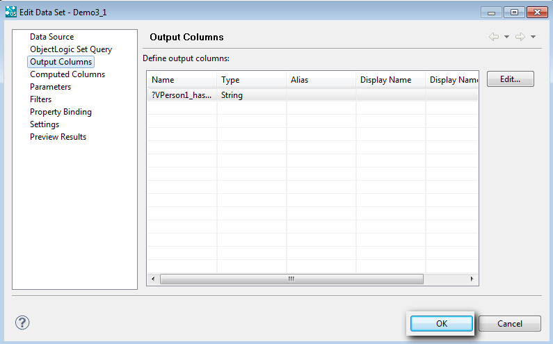
| 9. | Drag&Drop the data set element from the Data Explorer to the new report view to create a simple table view of your data. |
See below for the result:
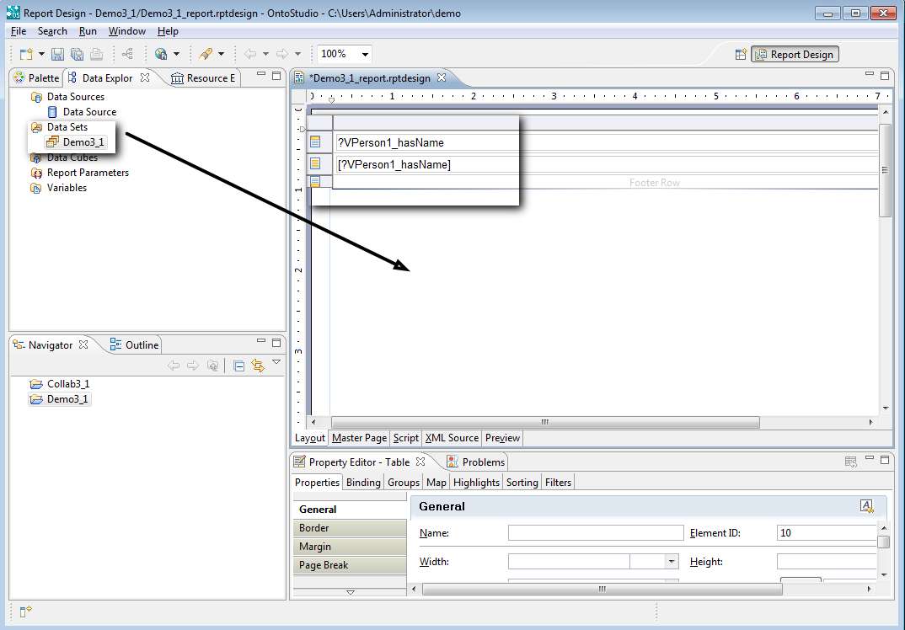
| 10. | Click on the Preview tab. |
The result of the query appears:
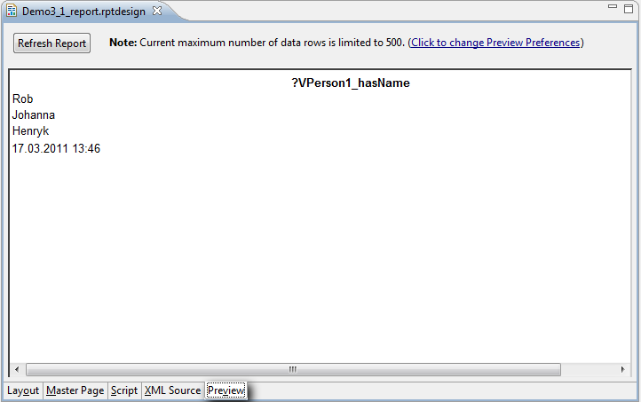
| 11. | Switch back to the Layout tab. |
| 12. | Select Chart from the Palette to create a chart. |
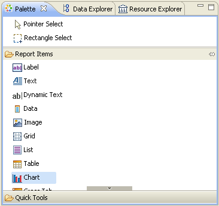
| 13. | Drag&Drop from Chart to the report. |
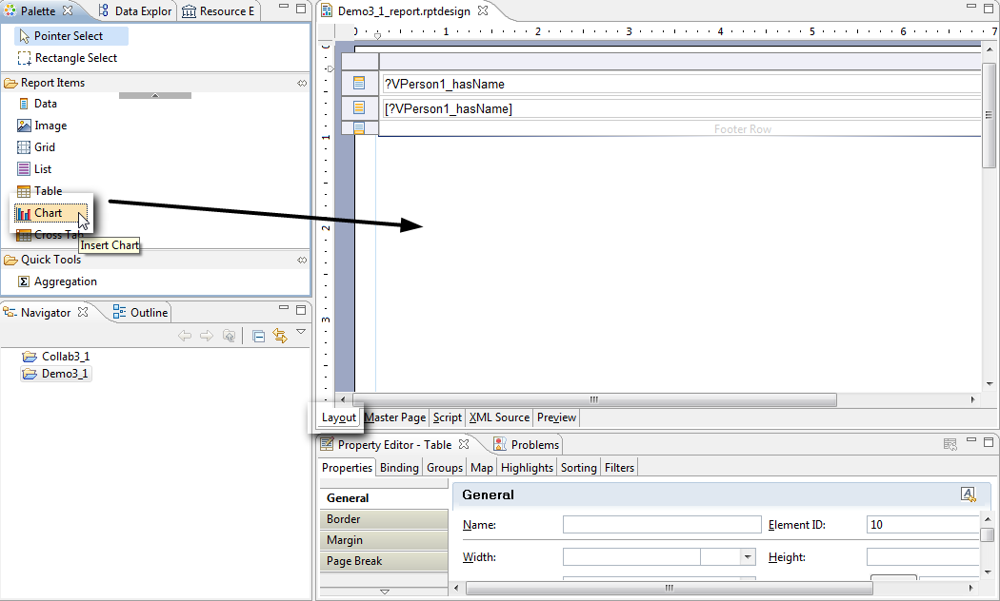
A new dialog box appears:
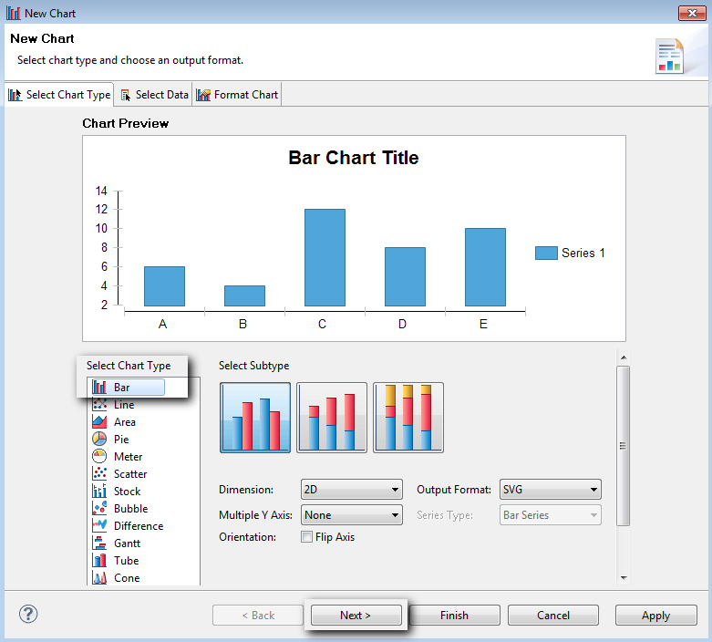
| 14. | Select a chart type and click on Next. |
| 15. | Select the Use Data Set radio button and select the data set to be used. |
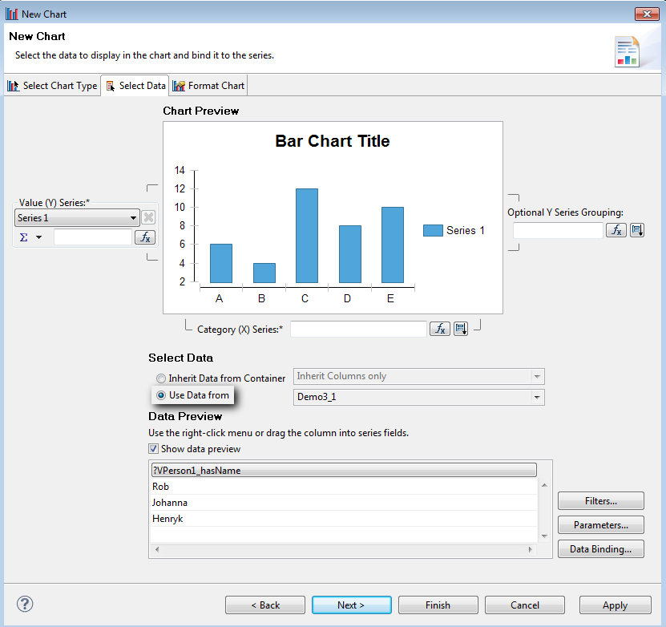
| 16. | Drag&drop the data column to the appropriate text field and click on Next. |
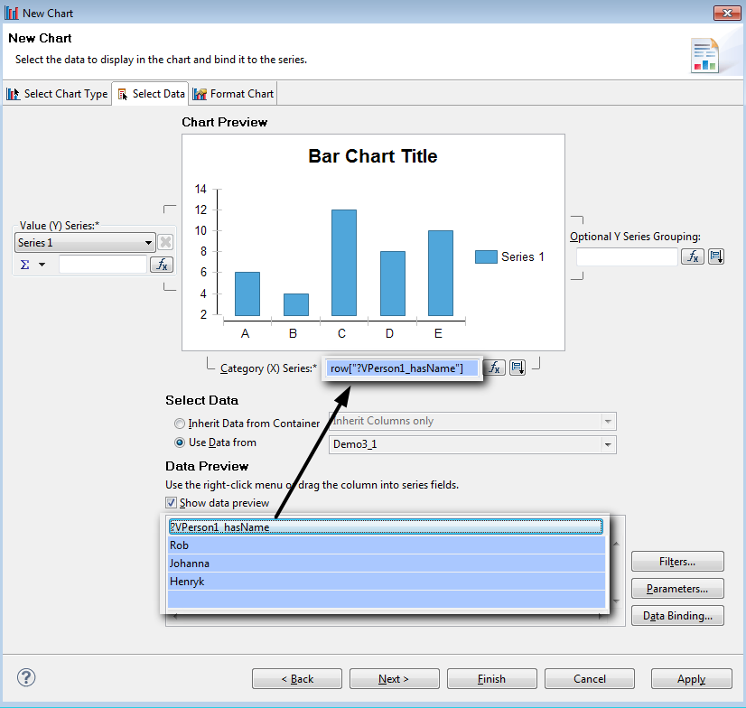
| 17. | Click on Finish |
The chart is created:
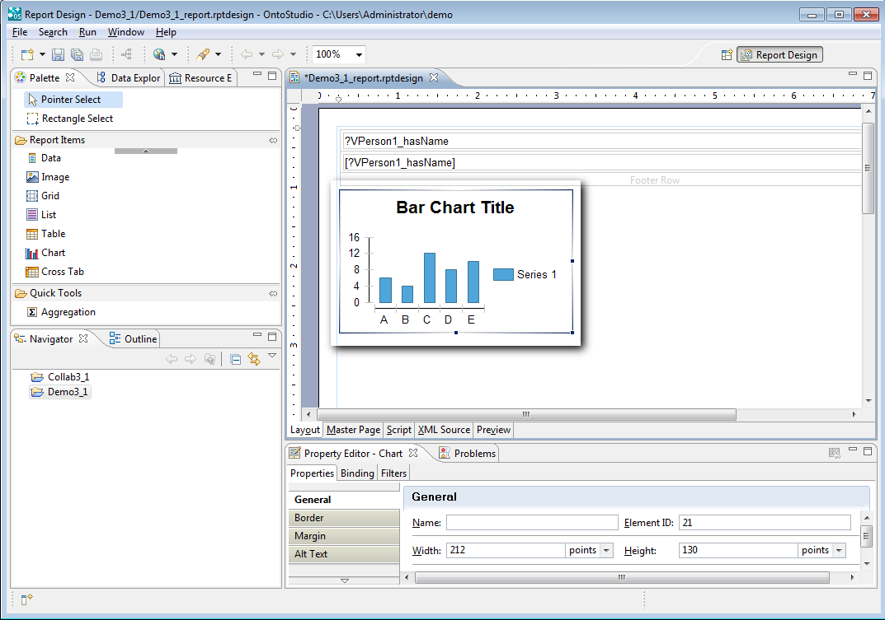
| 18. | Click on the Preview tab. |
You can see all of the generated charts.